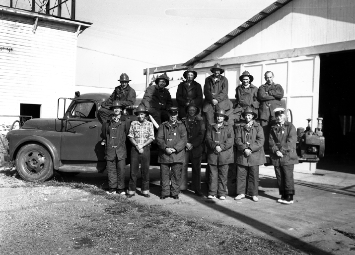

Tangent Volunteer Rural Fire Department -1960
About Us
Tangent Rural Fire District has a long tradition of volunteer service in its community. Our main goal is to provide our District with the best 24/7 emergency services possible. We respond to all 9-1-1 calls in the Tangent area from house, grass, and industrial fires to medical incidents to motor vehicle accidents to light rescue.
Cheif's Mesage
On behalf of all the dedicated men and women of Tangent Rural Fire District, I want to welcome you to our web page. It is my honor and privilege to serve as Fire Chief. Here at Tangent Fire we have a simple, yet very important mission: “to provide quality service to our community by safely protecting and preserving life and property through public education and emergency response.”
Tangent Fire District is comprised mainly of volunteers who donate their time and talents to benefit the community in which they live. Each year they respond to nearly 300 calls for assistance in an area of 45 square miles, with the majority of those being medical in nature. They also spend a vast number of hours training in order to better and more safely serve you. If you know a volunteer or encounter one, please take the time to thank them for all they do. We also work closely and collaboratively with our neighboring fire departments to make our communities safer in the most cost-effective manner.
Our organizational values of integrity, teamwork, accountability, respect, excellence, quality service, and safety define who we are as individuals as well as an organization, and are guiding principles in everything we do.
I want to thank you for visiting our web site, and invite you to contact us if you have any questions, concerns, or would like to inquire about becoming a member.